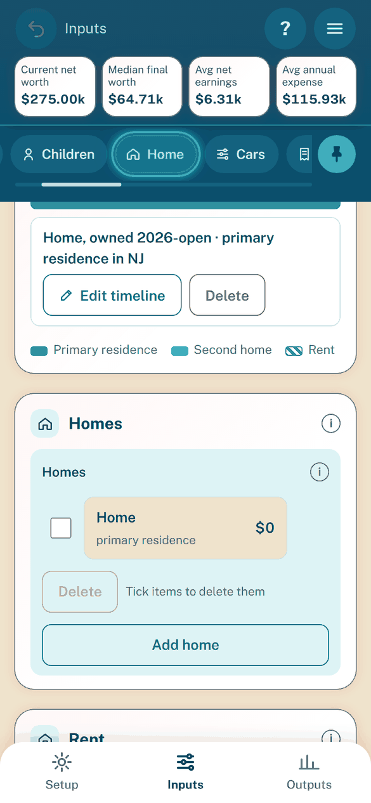
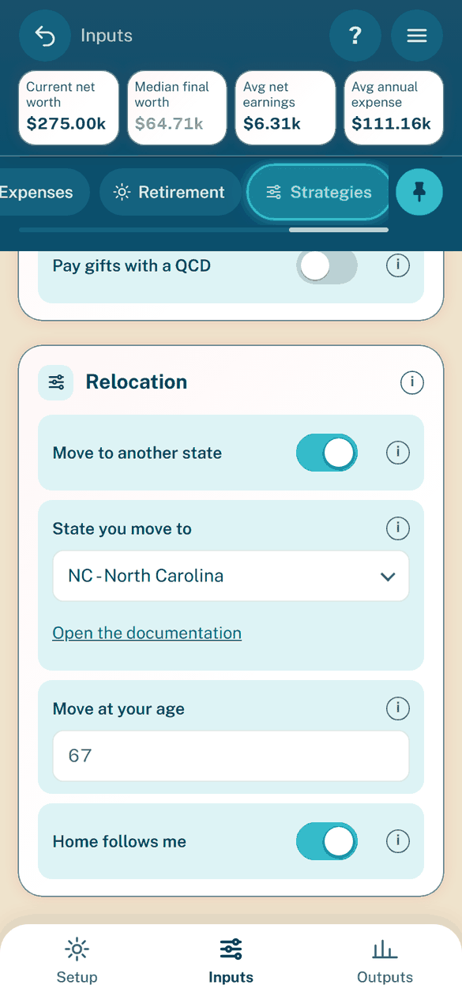

The app: Setup and Inputs
Purpose: where you enter the household on the Setup tab and the Inputs chips, and how the timelines, lists and sheets work. Continued from The app.
What each setting means and its default are in Model rules by group. This page covers how the screens behave.
Setup
Setup holds the open scenario and the household basics.
Card |
What you do there |
|---|---|
Open scenario |
Shows the name in large type, whether it is saved and the Auto-save switch. One strip offers Rename, Duplicate and Clear. |
Scenario files |
A strip of Save, Import and Export (the settings as a scenario file). Other scenarios lists those saved on this device; a tap opens one, and each has a “…” menu. New starts another. |
Household |
Include a partner, Your age, Partner age (only with a partner), filing status and home state. Filing separately splits joint accounts 50/50. |
Advanced settings |
“Inflation, years to simulate, Monte Carlo runs and seed, for people who know what they change.” Shut until opened; the app remembers on this device whether it was open. |
Two start-over items sit at the end of the menu (top right), each acting on a second tap: Load example household replaces the open scenario with fictional figures to explore, and Clear all data on this device deletes everything the app stored here, including the offline copy and saved documentation pages, then reloads as on a first visit.
About opens from the menu. It shows the build, version, Check for updates (in the GitHub Pages build), engine versions and run times. It also says the planner is not financial advice, models US federal tax and the income taxes of the 50 states and DC for the stated tax year only, and that the example figures are fictional.
Advanced settings
Field |
Behavior |
|---|---|
Inflation-adjusted dollars |
Off by default: amounts are in today’s dollars. See Inflation and dollars. |
Inflation range |
Shown only while the switch is on. Off, its mean is still used. |
Years to simulate |
Blank by default: until you are 100, shown in grey and following your age. A typed number is kept; a reset button restores the default. |
Seed |
A whole number, 0 or more. It sets the single run behind the headline figures and the Monte Carlo, whose first run is that single run. |
Runs |
25, 50 or 100; default 25. One count for the Monte Carlo and Compare. Its help gives the time on this device. |
Inputs
Inputs has one chip per area: Income, Children, Home, Cars, Loans, Accounts, Benefits, Healthcare, Expenses, Retirement and Strategies. Labels, help, units and bounds come from the settings schema. Household basics, the Seed, the Runs and the inflation settings are on Setup.
Good to know:
Home, Loans and Expenses have notes behind the “i” at the right of the group heading.
Every “i” sits at the far right of its row: in a pane heading just before the chevron and the switch’s place (kept on every pane, so they line up down the page); in a field, after the label and any switch.
Only loans secured by a home feed the mortgage deduction.
A home loan plus a Mortgage Bills row charges the payment twice.
Charity rows are gifts per year. Any other row can be given a tax deduction.
A
#retirement,#medicareor#social-securitylink opens the Retirement chip.
Income
Raises and promotions is a disclosure: a mean slider (0% to 10%), a standard deviation slider (0% to 5%) with a small curve, the chance and the promotion raise, and a Reset to the shipped values.
Earnings history is a disclosure, closed until opened. A toggle picks Manual entry (year-by-year rows) or Last salary (the last salary, the last year it was paid and a table of filled-in years).
The filled-in table is read-only until Edit; a typed year is marked “edited”.
I’m retired, above the salary, hides the salary and Retirement age (kept, not used) and opens the earnings history.
Children
Item |
Behavior |
|---|---|
Child inflation factor |
Shown only while there is a child. Defaults to 20% per child, also in a new scenario; gray while at 20%. |
Child card |
Age today (or “not born yet”) and the age its child years end. Add child starts a child born this year, in child years up to age 21. |
Daycare section |
Start age, end age, cost per year. |
College section |
Start age, years, cost per year and 529 account, a select of the household’s 529 accounts. |
Add children as beneficiaries |
On in a new plan and the example household. Keeps one beneficiary per child on Benefits. |
With the switch on, each child keeps one beneficiary that follows the child’s name. Switched off, untouched ones are removed and one you edited is kept, with a warning naming it. Add children under the Beneficiaries list adds any missing ones.
Home and the timeline


The Timeline pane: owned stretches are filled, rent is hatched.
Home opens with the Timeline pane, then three panes: Homes, Rent and Utilities.
Homes has one card per home: its name, “primary residence” or “second home”, “mortgage” while it counts, “buys at 60” and “sells at 70”, and its value today (or its price when bought later).
Rent has one card per rent period: its name, first and last years (“today” and “open” for renting now and to the end) and monthly rent.
Timeline is a picture: one bar row per lane, with no cards and no Edit or Delete buttons. Owned is filled, rent is hatched. The primary residence is a slightly deeper color. A legend names Primary residence, Second home and Rent.
Tap a bar (or focus it and press Enter) for a small box under its row: the name, its role (primary residence, second home, rent or car) and years, a one-line summary, and Open <name>, which opens the same sheet as tapping the item in its list. The X, Escape or a tap outside closes it. A gap (“No home”) is not a button.
The pane has no Add button of its own. Add, edit and delete from the lists below it.
Add home opens the one Add screen, “What are you adding?”:
Choice |
What it asks |
|---|---|
I currently own it |
Name, optional sale year, value today, mortgage with the balance owed. Beside a home owned today, it is a second home. |
A future purchase |
Name, purchase year, optional sale year, price, buying costs, mortgage. |
Rent |
Name, first year, optional last year, monthly rent. Add rent period opens this screen with Rent chosen. |
The mortgage figures show only while its switch is ticked. The Add and Edit timeline screens also ask the state (Home’s state, State). A primary residence or rent period starting later in another state moves you there, and the note under the block names the year (“Living in FL from 2036”). See Moving states.
Edit timeline is titled “Edit timeline: <name>” and changes the years and price only. Its Plan to sell it tick shows the sale year. Open full home details (Open full rent details) closes it with nothing applied and opens the full sheet. It opens from the item’s sheet: its Edit on timeline button.
Every timeline screen is final: Save applies and closes, Cancel applies nothing. A refused step keeps what you typed and shows its sentence.
Timeline rules:
Back to back stretches share a year. Adding a home or rent period between two others refits both, and a note names the refit.
With no purchase or sale, exactly one home is primary. A home cannot be primary while a rent period overlaps it; the sheet names the rent period.
While Relocation adds a home or rent period (Home follows me), it shows as a hatched bar. Its box says it is calculated by Relocation and has no Open. See Relocation: moving to another state.
A warnings box flags a Mortgage loan with no home, and Expenses rows that repeat what Home charges.
A home’s sheet has the groups Basics, Mortgage, Property tax and insurance, and Other loans on this home. Add loan on this home adds a Second mortgage, Home equity loan, Home equity line or Mortgage. It has the Loans figures plus Used on this home (off: its interest is not deducted). A home bought later hides its value today and mortgage balance, and labels the months Mortgage term (months).
The Mortgage group of a home owned today opens with Define loan by: At purchase or Current (the default). Current asks what is owed today and the months left. At purchase asks the Original mortgage amount, Mortgage start year and Mortgage term, and a gray line under them reads today’s balance and the time left (“Today’s balance $268,000, 25 years left”), “Paid off”, or “Enter the original amount and start year”. The Monthly payment follows that balance. Switching keeps both sets of figures. A home bought later has no toggle: its mortgage is the price less the down payment.
Cars
Cars has the fuel price (only while there is a car) and one card per car. A card shows the car’s name, the driver, “loan”, the replacement rule, “buys at 55”, “sells at 62” and its value today. A leased car’s value is 0.
The Timeline pane works as Home’s. A lease is outlined. Add car offers a car owned now (Purchase price (as paid), Year bought, optional value override, loan) or a future purchase (Buy in year, price). A future purchase has an optional Replaces select (Replaces), which puts it in that car’s lane from its sale year.
A car’s sheet is in sections:
Section |
What it holds |
|---|---|
Basics |
Name, driver and the fields common to every car. |
Value |
Purchase price (as paid), Year bought, Depreciation first year, Depreciation per year and Value today. Blank or 0 shows a gray estimate. A typed value wins; its reset button restores the estimate. |
How it is paid |
A toggle: Cash, Finance or Lease. Finance shows the loan figures. Lease shows the lease payment and hides the value, loan and replacement figures. A car owned today and financed has Define loan by: Current (balance and months left) or At purchase (Original loan amount, Loan start year, Loan term, with today’s balance and the time left in gray), as on Home. |
Replacement |
Replace by (Years, Miles or Both; with Both the first rule reached triggers). Each rule has its own figures. Then Replacement paid by with loan or lease figures. |
Commute |
Commutes to work, the commute figures and the miles per year. Without a commute the label is Miles per year; with one, Extra miles per year (not commuting). |
More car behavior:
A blank figure that falls back on another shows that figure in a muted color until you change it.
Replacements by rule show on the timeline as hatched stretches of the car’s bar (the legend: Hatched: replaced automatically by the rule). Tapping one names it (“Sedan replacement”, from 2031 by miles), says it is calculated from the replacement rule and has no Open. A leased car has none.
Each timeline bar has a small icon at its right end, a finger on a touch screen and a mouse pointer on a computer, to show it opens when tapped or clicked. A bar too narrow for it shows none.
A car replaced by miles drives fewer miles once its commute stops at retirement, so its next replacement comes later, or none comes before the plan ends. The replacement in which the commute stops says so when tapped.
A warnings box names Expenses rows that repeat a car cost.
Loans
Loans lists the Student, Auto and Other loans and any Mortgage loan a saved file left there. A new loan starts as Student.
Each home’s mortgage and other loans appear as read-only rows titled with the home’s name, with an “Edit home loans on Home” button.
Each car loan appears as a read-only row with an “Edit car loans on Cars” button. A car loan cannot be edited on Loans.
A car loan or mortgage defined at purchase shows its balance and months left today, as worked out. Loans on this chip and a home’s other loans have no Define loan by: they are entered by what is owed today.
A loan’s sheet ends with Starts later (Starts in year) and Pay off early (Payoff age, Prepayment penalty). Its card adds “starts at 53” or “paid off at 58”.
A loan added on Home starts as a Mortgage; one added on Loans starts as Student. The Kind select offers only that panel’s kinds.
Accounts
Accounts adds “Where surplus cash goes” (see below). Only the owners the household has are offered. A new account starts Joint for cash and Investments and You for a 401k or IRA; changing its kind moves an owner still at the old default. A 401k or IRA belongs to one person, and each person paid today who deposits needs one of their own: the check names the person and the Owner to pick. Adding a partner also adds the partner’s own copies of your 401k and IRA rows, worth 0 and named “<account> (partner)”.
While the HSA counts (it and the medical plan on) or the dependent care FSA is on, a read-only “Benefit accounts” block shows them, with an “Edit on Benefits” button. They take no part in the withdrawal order or the surplus sliders.
An account’s sheet shows the name, kind, owner and starting value, then “Returns and basis”:
A cash, Investments or 529 account also shows Monthly deposit (today’s dollars; blank shows 0 in grey) and Deposit to age (inclusive) (blank: while the owner is paid), right after the starting value. The deposit comes first out of the year’s net earnings, before the surplus shares.
A Traditional or Roth IRA shows the Benefits deposit slider for that account (Deposit per year, 0 to the owner’s limit), below the other fields. It moves the same stored deposit as Benefits’ Deposit per account, so the two always agree; on the household plan, moving it switches to amounts per account.
The returns disclosure holds the mean return, the standard deviation and a “Use the usual returns” button.
Cost basis shows only for Investments, IRA basis and State IRA basis (NJ) only for a Traditional IRA (a blank state basis is the IRA basis), and Roth basis only for a Roth IRA or Roth 401k (blank: the whole starting value is contributions).
Changing the kind clears a basis, deposit or monthly deposit the new kind cannot hold. It replaces each return that is blank or still the old kind’s usual value.
Benefits
Each Benefits section opens with a switch for whether the household has that benefit. Off, the section shows only the switch.
Section |
What it holds |
|---|---|
Retirement plan |
The plan’s switch, then one group per person, “Your plan” and “Partner’s plan” (with a partner): the deposit as two linked sliders, a “Traditional deposit (% of pay)” box with a slider and at High (or Add detail) a “Roth deposit (% of pay)” box with a slider, each bound both ways and grey at its default with a reset; then that person’s employer match, its switch and one “Employer match (% of pay)” box (0% to 100%). The deposit is % of pay only; no dollar amounts show. Each slider runs from 0% to the share of pay that reaches the person’s 401k limit this year (with any catch-up for their age), rounded up to the 1% step, and the two together never pass it: raising one past what the other leaves lowers the other, and at the limit the note “IRS limit: at most X% of pay together” shows (a share typed above the limit is held there). A saved share above it stays stored but shows the limit. A share whose kind of account (Traditional or Roth 401k or IRA) the person does not own shows a hint to add one in place of its slider. Without pay the sliders are off and a note says so. The notes on the deposits follow; the dollar slider per account shows only while amounts are set per account (see below). |
Medical plan |
The health premium for the household, the pre-tax switch and the plan’s cost sharing, with a Per person / Combined toggle right after the out-of-pocket maximum. An “HSA” sub-section shows while the plan is on. Its note on screen reads: “After work ends: the Gap medical plan and Medicare are set on the Retirement tab.”; Retirement tab is a button that opens that chip. |
HSA |
Its switch, then HSA contribution each year (“What the year’s costs need” or “The most allowed”), HSA cap per year (shown on “The most allowed” only: a slider from $0 to the legal limit for the coverage, family while the partner or a child is on the plan, and each person’s catch-up from 55; at the top by default, and a saved cap above it shows at the limit with an “IRS limit” note), Contributed through payroll, Employer HSA contribution per year, HSA balance, the mean return and standard deviation, and HSA owner. |
Dependent care FSA |
Its switch, then FSA cap per year, a slider from $0 to the federal limit for the household’s returns (at the top by default; a saved cap above it shows at the limit with an “IRS limit” note). A warning shows when the FSA sets nothing aside. |
Beneficiaries |
No switch. See below. |
The HSA pane warns when the plan’s deductible is below the high-deductible minimum.
Beneficiaries
The section’s note reads: “Beneficiaries set how the after-tax final value is measured (the tax they pay when they inherit Traditional money); they do not change the plan itself.” See Beneficiaries.
The list has one row each (name; filing status, state and payout; share). A tap opens the pop-up.
The pop-up has Name, Other income, Filing status, State (Same as household or one of the 51 states) and Takes Traditional money (Over 10 years or All at once). Remove is among its actions.
Add beneficiary adds up to 20, with an equal part.
Split among beneficiaries has a linked slider and a lock per beneficiary. The shares always total 100%, and a share may be 0%. A removed beneficiary’s share passes to the others in proportion.
The tax rate box comes under the sliders. Blank taxes each payout at the beneficiary’s brackets. A typed rate is charged flat. Use the beneficiaries’ payout clears it.
Healthcare
Healthcare holds how costs are set (a flat amount, the default, or visit-based). Healthcare always counts. It then shows the flat amount’s two ends, or the visits, their price and the drugs. One “Reset to defaults” button puts all the visit figures back.
Expenses
The Expenses note lists where other costs are entered:
Cost |
Where |
|---|---|
Children, college, daycare, dependent care FSA |
Children and Benefits |
Home bills and loans |
Home and Loans |
Car costs and car loans |
Cars |
Healthcare |
Healthcare (Medicare on Retirement) |
Taxes, Social Security, savings deposits |
Worked out; no row needed |
Put only costs no other tab enters here. A tax-deductible cost other than Charity, or a cost only in the child years, needs no row. Leave out loan, mortgage and car payments: their own tabs always charge them.
Lists. “Monthly expenses” has Bills, Planned Spending and Other Spending. “Major expenses” has Major Spending and Charity, amounts per year. Each sheet offers only its categories.
Add picker. A new scenario starts with no expense rows. Each list’s Add expense drop-down offers the common expenses of its categories not added yet (from
.config/expenseCategories.json), then Other (your own). It leaves out the presets another tab already counts (Out-of-pocket medical, Prescriptions, Childcare and Car repairs; see the warning below). A picked preset is added with its name, category, sales tax status and flags set and its amount blank ($0 in gray), and its sheet opens. A row left at 0 counts for nothing and is left out of the report’s Expenses table. The example household keeps its suggested rows, and a saved scenario keeps its own. Each preset also has a price type that sets how its cost changes after a move (see Moving at retirement).Preset
Set on the added row
Groceries, Clothing
Taxable left blank: the state’s own grocery or clothing rule applies
Dining out, Wi-Fi & cable, Cell plans, Subscriptions, Hobbies, Travel, Household supplies, Furniture & appliances, Gifts, Gym, Entertainment, Electronics
Taxable Yes
Personal care, Home repairs, Pets, Lawn & cleaning, Car repairs, Transit & rideshare, Life insurance, Family support
Taxable No
Out-of-pocket medical, Prescriptions
Taxable No; deduction Medical and dental
Education
Taxable No; Education expense (529) set
Childcare
Taxable No; a child cost (not scaled by children) and Dependent care, both set
Charitable giving (Major expenses list)
Category Charity: per year, always deductible as Charity
Other (your own)
Taxable Yes, no price type (follows the goods and services blend after a move)
Already counted from other tabs. The panel opens with a read-only card of costs other tabs already charge, under “Bills - Other”, and the taxes note.
Counted twice warning. A row whose name, typed in its sheet, looks like a cost another tab already counts opens a warning: “<Name> looks like <cost>, which is already counted on the <Tab> tab. Adding it here counts it twice.” Go to <Tab> puts the name back (a row just added is removed) and opens that tab, Add anyway keeps the name and Cancel puts it back. A tax the model works out has no Go to button. The names are matched by whole words, ignoring case and plurals, against one table (
wmti.inputs.countedelsewhere): mortgage, home loan, rent, property tax, home insurance and utilities (Home); car payment, lease, car insurance, fuel, tolls, parking and car upkeep (Cars); student, personal and other loan payments (Loans); medical costs and prescriptions (Healthcare); health premiums, HSA, FSA and retirement deposits such as 401k and IRA (Benefits); Medicare premiums (Retirement); daycare and college (Children); savings and 529 deposits (Accounts); income, payroll, sales and Social Security taxes (worked out by the model). Saved rows are never checked as they load.Total expenses. The panel ends with a per-month card: each monthly category, Major Spending and Charity at your age today (per year divided by 12), one “Bills - Other” row and one “Total expenses” row. It reads n/a until the notes arrive.
An expense sheet says whether the amount is per month or per year in today’s dollars.
Field |
Behavior |
|---|---|
Ages |
One slider from your age today to your age in the last year. A monthly row has From age and To age; an end knob stores a blank (the start or end of the run). A Major Spending row has Age paid and is paid once. Ages read beside the label (“Age 40 to 65”, “Age 52”). Charity never shows ages. |
Tax deduction |
Radio row of every real option. Tapping the picked one again clears it to none. Charity’s deduction is always Charity. |
Taxable |
Yes or No; never shown for Charity. Says whether the row pays sales tax (see Sales tax). While blank, the row’s default shows picked and underlined; Groceries and Clothing show neither, as the state’s rule applies. |
The Exclude from child inflation, Education expense and Dependent care ticks never show. Switching a row to Charity clears its ages and deduction.
An expense card shows its period, any deduction, its ages and “not scaled by children”. A loan card shows “refinanced” when it is.
Retirement
Section |
What it holds |
|---|---|
Social Security |
Under a “You” and a “Partner” sub-heading (Partner only with a partner): the benefit basis, benefit table and claim age. The benefit by claim age (the benefit table or the estimate from earnings) sits closed under “Claim estimates” on every start of the app; one opened stays open for the visit. |
Gap medical plan |
Its switch, then the monthly premium: health insurance from the first year nobody is paid until Medicare, in place of the Medical plan. |
Medicare |
Medicare age and type, Part B, Part D premium (plan-specific, entered), coinsurance and out-of-pocket maximum. |
Medicare supplement |
Its switch, then four figures while it is on. Hidden on Medicare Advantage. |
Spending in retirement |
Its switch, then Equal change or Per expense, the percent, the start age and a caption showing monthly rows before and after. |
Details:
Benefit basis. A toggle of Earnings history and Manual entry (Earnings history at High effort only). With the earnings history filled in, choosing it just switches. Without it, a hint says to enter past earnings on Income, and choosing it asks “Enter earnings history?”: No keeps Manual entry; Yes opens that history on Income, with a large Back to Social Security button in the top bar and a labelled X. The basis stays Manual entry until the history is entered; Back then switches it to Earnings history.
Claim age. A one-knob age slider from 62 to 70 (whole years; arrows, Page Up and Page Down, Home and End move it), with the benefit used at that age; the walkthrough asks it the same way. Switching keeps the entered amounts.
Medicare age. A one-knob age slider from 65 to your age in the run’s last year; a saved age outside that range shows at the nearest end and is kept until the knob moves.
Part B. While on, a read-only line shows the standard premium per person per month, its year and the yearly deductible. The model adds IRMAA on higher incomes. A warning says when the IRMAA tier of the first two years is estimated.
Out-of-pocket maximum. Hidden on Original Medicare.
Spending start age. Blank starts at your Social Security claim age, or the age you stop working with no benefit entered. The blank box reads “Starts at your Social Security age, 67”.
Per expense. Lists every Expenses row with its own percent and the amount after it.
Strategies


Relocation on the Strategies chip.
Strategies has one section per strategy, each with its switch. Settings show only while the switch is on. Strategy warnings follow the QCD section.
Strategy |
What the screen shows |
|---|---|
Roth conversion |
Its rule, then Ages: the expense rows’ slider, with From age and To age knobs (an end knob stores its age, never a blank), then Convert up to. The Social Security limit cannot be ticked while filing separately. Switching it on adds or removes the Rollover account, a Roth IRA for an owner of Traditional money with no Roth account. Editing that account makes it your own. |
Roth backdoor |
Its switch and settings. |
QCD |
Its switch and settings. The after-tax IRA basis is on each Traditional IRA’s account sheet. |
Relocation |
Move to another state, then State you move to, Move at your age and Home follows me. |
Early withdrawals |
Last. Use penalty-free money first (off by default; see Early withdrawals). |
Convert up to is a dropdown checklist. Its button names the ticked limits, or reads None chosen. Escape, the button or a tap outside closes it.
Limit |
Starting value when ticked |
|---|---|
A fixed amount each year |
$20,000 |
Social Security tax limit |
The lower Social Security tier |
0% capital gains limit |
None; the tick alone |
Top of a tax bracket |
The 22% bracket |
Below an IRMAA tier |
The first IRMAA tier |
A custom income ceiling |
$100,000 |
Unticking returns the field to blank, which the model ignores.
Relocation, in the settings above:
Move at your age is blank by default. It shows your Social Security claim age (or, with no benefit, the age your pay stops) in gray until you type an age.
Home follows me is on by default. On, your home is sold when you move and a comparable primary residence is bought in the new state. Off, your home stays where it is and becomes a second home under its own state’s rules.
The section’s “i” lists what changes at the move: income and local tax, estate and inheritance tax, car insurance and taxes, the gas price, health premiums, Expenses prices and your home. The price change and the sales tax difference show together as State Cost Change.
See Relocation: moving to another state and States: taxes, living costs and moving.
State boxes
Every state choice (home state, a beneficiary’s state, the state you move to, a home’s or rent period’s state, the walkthrough’s state question) uses one combobox of the 51 states, labelled like NJ - New Jersey.
A tap opens the list; typing filters by name or code. Arrow keys, Home and End move the highlight; Enter or a tap picks; Escape restores the chosen state.
Lists
Accounts, expenses, loans, children, cars and the other lists show one card per item, edited in a sheet.
Only the accounts list is ordered; its order is the withdrawal order. Each account card has a tick box and a drag handle.
A bar under the list has Move up, Move down and Delete for the ticked cards. They are greyed out until one is ticked. Ticked cards move as a block, and Delete asks for a second tap.
Dragging a handle drops the card in the place of the card under your finger. With the handle focused, the up and down arrows move it one place.
Lists whose order means nothing keep the tick boxes and Delete, with no handle and no Move up or Move down.
An optional part, such as a loan’s refinance, has Add and Remove buttons.
Where surplus cash goes
Each cash, Investments or 529 account has a slider (its share of the surplus, in percent) and a lock button. A 529 takes its share only until its balance, grown at its expected return, would pay the rest of its child’s college cost (model rules).
Dragging a slider moves the unlocked others so the total stays 100%.
A locked account keeps its share and its slider is greyed out.
With one such account, it takes 100% and has no lock. When every other account is locked, the last is fixed too and the page says so. With none, the page asks for one.
The locks are remembered in the browser. An account’s sheet does not show the share.
Deposit per account
While amounts are set per account (saved with the scenario), the Retirement plan pane of Benefits ends with a slider per Traditional 401k, Roth 401k, Traditional IRA and Roth IRA account, by owner, from 0 to the most its limits leave, in steps of $100. On the household plan these dollar sliders do not show; the deposits are entered as % of pay.
On the household plan the pane shows only its notes: a person with no 401k or IRA of their own deposits into the other’s, and the pane says so.
A move sets the amount for every account. Raising one slider lowers the most the others sharing its limit can take. With amounts set, each person’s deposit boxes are greyed out (“Set per account below”).
“Go back to the household plan” clears every amount.
An account with no room says why. When the settings are not valid, the page asks you to fix them first.
Sheets
Every pop-up has a title that stays at the top and a footer that stays at the bottom. Only the body scrolls. Actions are in the footer.
Pop-up |
Footer |
|---|---|
Item sheet (account, expense, loan, child, home, car) |
Cancel and Save. Edits show as you make them. Save keeps them and closes, as one Undo step. Cancel, Escape or a tap outside restores the item (a newly added item is removed) and leaves no Undo step. |
Timeline sheet |
Back (once a step back is possible), Cancel, Save. |
About, Legal, Install help |
A single Close. |
Scenario dialogs (New, Rename, Import, Clear, Delete, unsaved changes, Export, Final report) |
Their own verb and Cancel. Export has Copy text and Close. |
Move up, Move down, Remove (a second tap confirms) and Edit on timeline stay in the body under the last field.
No pop-up has a close (×) button.
Enter in a one-line input ends the edit: the input loses focus, the value is kept and the keyboard closes. A multi-line box keeps Enter for new lines.